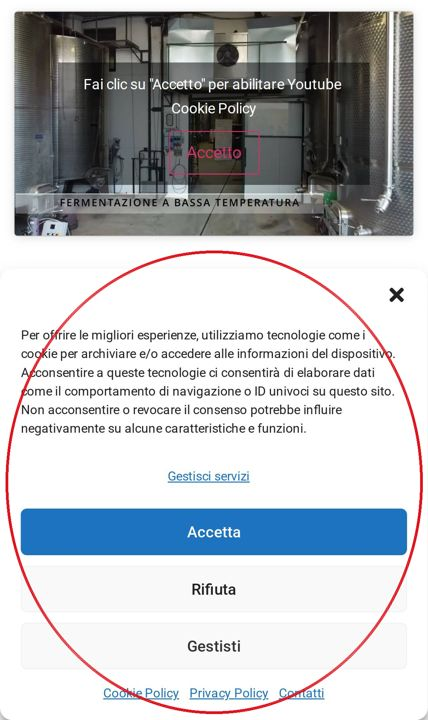
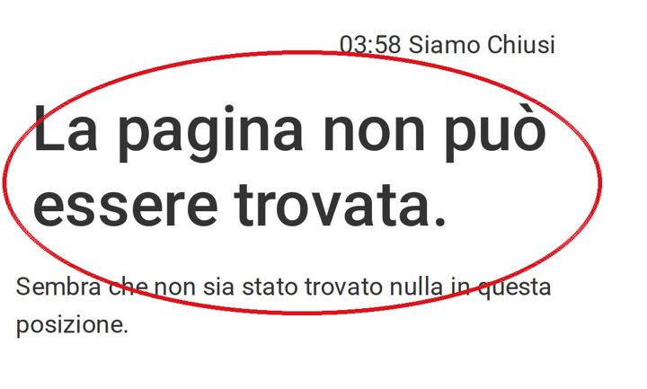
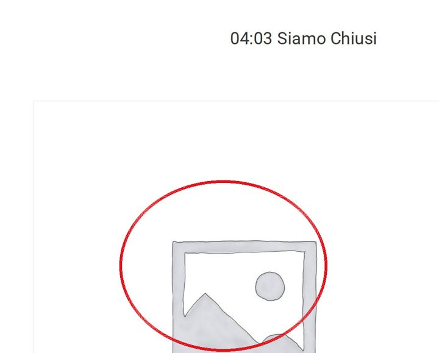

Mezzo schermo coperto
Dal telefono, appena si apre il sito, la finestra dei cookie copre circa metà dello schermo. Sopra, al posto del video, compare la scritta «Fai clic su "Accetto" per abilitare Youtube».
Zinzani Vini · Faenza
La prima schermata che vede chi apre il sito dal telefono. Trascinate il cursore: a sinistra il sito di oggi, a destra la bozza nuova.
Trascinate con il dito o con il mouse

Dal telefono, appena si apre il sito, la finestra dei cookie copre circa metà dello schermo. Sopra, al posto del video, compare la scritta «Fai clic su "Accetto" per abilitare Youtube».

Alcuni indirizzi del sito che compaiono nei risultati di ricerca, come la pagina del negozio online e quella del rosato Rogé, rispondono «La pagina non può essere trovata».

Nel negozio è pubblicata una pagina prodotto chiamata «prova», con l'immagine segnaposto al posto della foto.
Misure fatte il 29 ottobre 2026 con un telefono simulato (Chrome, Pixel 7), cache vuota, sulla homepage di oggi (tre misure) e sulla bozza.